Steps◇
11
from New Task to Complete task
You can do this tour instead of reading it. dev-3.0 runs exactly these eleven steps live on its own, the first time you open it — a card rings the next button in the real app and waits for you. Nothing here is a mock-up of that; it is a recording of one such run.
So this page is for reading ahead: if you would rather see what using dev-3.0 feels like before installing anything, this is that. If it is already installed, close the tab and press Try a sandbox repo instead.
dev-3.0 runs AI coding agents on git repositories. Every task gets its own branch, its own folder and its own terminal, so several agents can work at the same time without touching each other's files. That is easy to say and hard to picture, so the first run does it once for you: dev-3.0 makes a small throwaway repository, fills in the first task, and a card walks you through every button until the work is merged and the task is closed.
The card rings the one control you should press, holds back the rest of the screen so you cannot get lost, and moves on by itself once the app moves. You can leave at any point with Escape or I'll look around myself, and the tour comes back on every visit to an empty sandbox board until you walk it to the end.
| What | Why | If it is missing |
|---|---|---|
| An agent CLI on your machine | Something has to do the work — Claude Code, Codex, Gemini, Cursor Agent or opencode | The first-run strip says so and sends you to Settings instead of a sandbox |
| That CLI signed in | An installed-but-unauthenticated CLI starts, prints a login prompt into the terminal, and the task sits there dead | Same: Settings, not a task that would have died on a login prompt |
node on your PATH | The sandbox page is served by a nine-line server.js, so the dev-server step has something to run | Only that one step is dull; nothing hangs |
A fresh dev-3.0 has no projects, so the first screen offers one. Press Try a sandbox repo and dev-3.0 creates a tiny repository of its own — one page, one button, one dependency-free server — and opens its board.
Nothing of yours is involved, and the whole thing is thrown away when you are done.
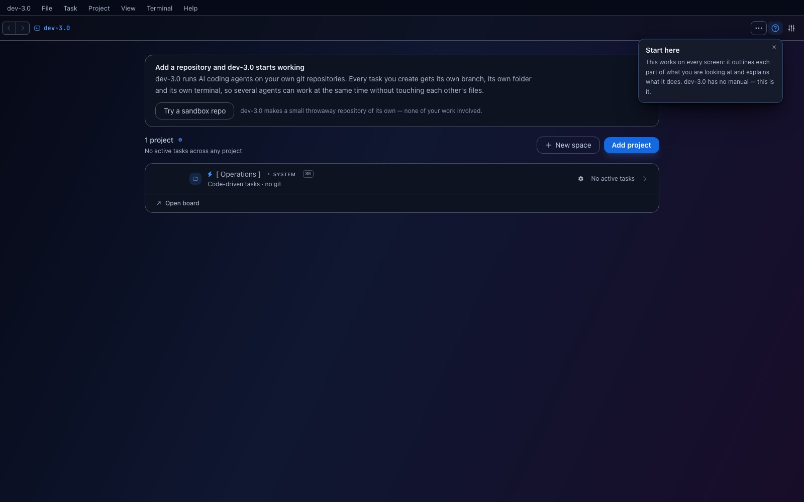
The board is empty on purpose, and the card rings the only button that matters. Everything else is held back — the dark bands around the ring are a shield, so a stray click cannot take you somewhere the tour cannot follow.
Do it presses the real button. The card never fakes progress: if the app did not move, the tour did not move either.
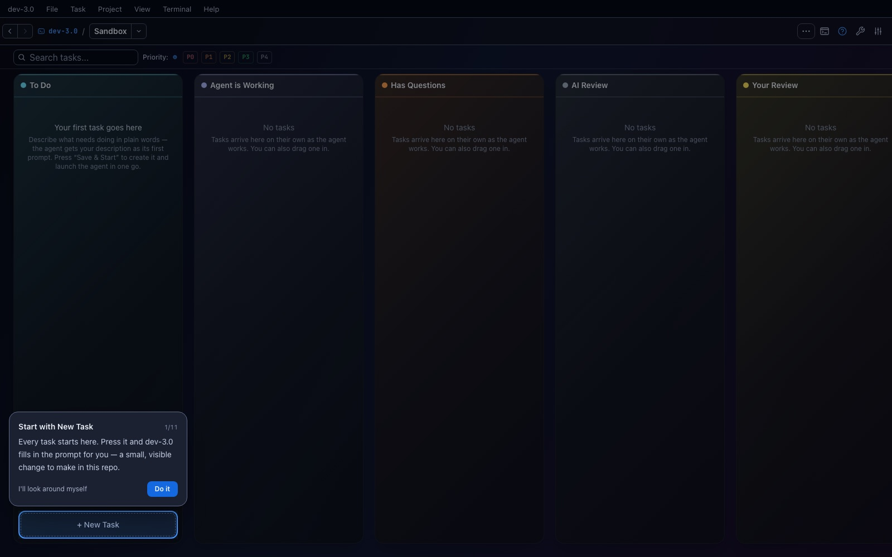
A first task is a blank page problem, so dev-3.0 fills it in: change the Ship it button in index.html from green to blue, take screenshots before and after, show them in a dev3 artifact, then commit.
That description is the agent's first prompt — plain words, no template. Everything else on this form is optional.
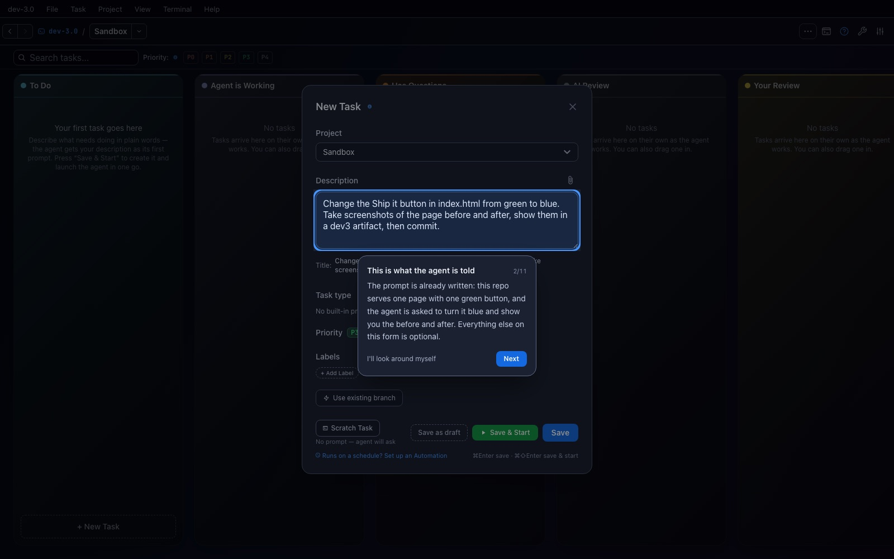
Two buttons that look almost the same and do very different things. The blue Save only puts the task on the board. The green Save & Start also gives it a branch and a folder of its own and starts an agent on it.
This is the one thing new users get wrong, which is why it gets a step to itself.
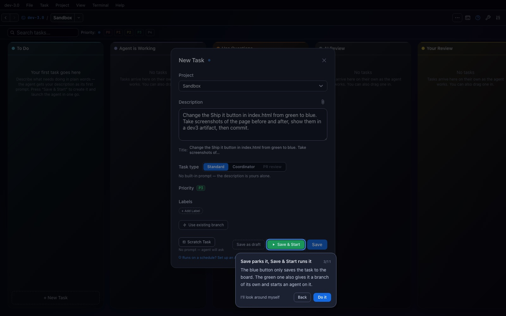
Three separate choices: the harness (which agent CLI runs), the model, and the mode (how much freedom it gets). Add a second row and two agents solve the same task independently, so you can compare and keep one.
In the sandbox the mode is preselected to one that never stops to ask permission — a first-run user has no basis to judge “do you want to proceed?” from an agent CLI. Your own model stays whatever you normally use; only the permission mode changes, and only here.
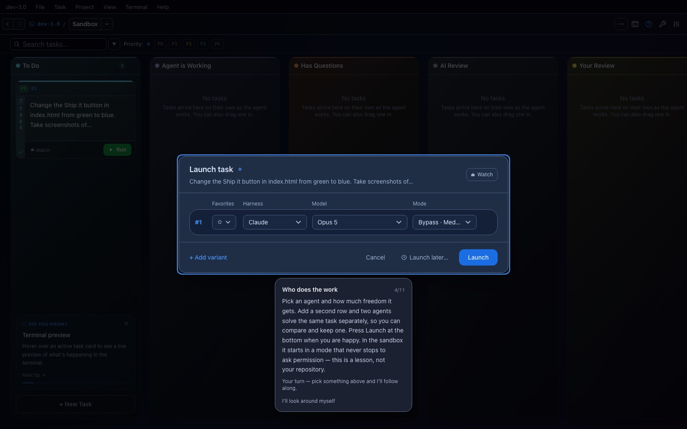
The task left To Do and already has its own branch. Launching deliberately does not navigate you anywhere: a board full of agents stays one screen, and you decide which one to watch.
Click the card to open it.
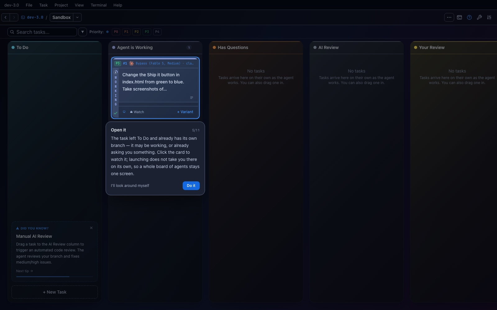
A real terminal, in a copy of the repository that only this task owns. It is a conversation, not a progress bar — you can type into it at any time.
In this run the agent renamed its branch, gave the task a title and a label, read index.html, and screenshotted the page before touching anything.
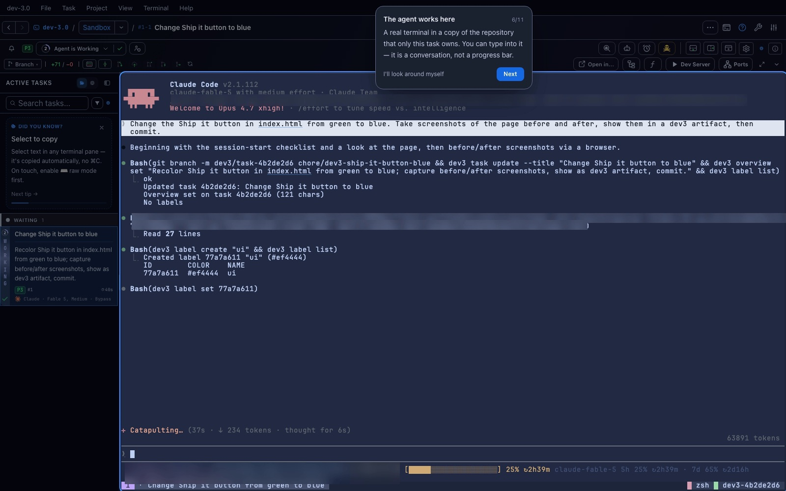
Every project can declare how to start itself. The sandbox declares node server.js, and dev-3.0 keeps a port for this task, so pressing play serves the page you are watching the agent change.
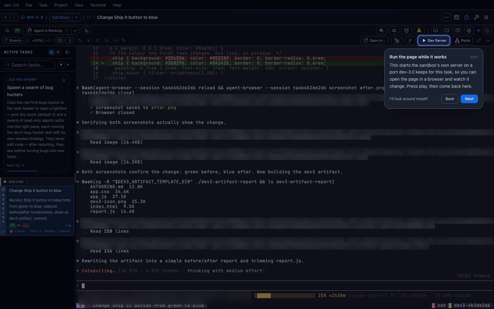
sandbox on http://127.0.0.1:18623 — a port dev-3.0 assigned to this task, so two tasks serving the same project never collide.
While that was starting, the agent finished the work and published its report, which is already open on the right.
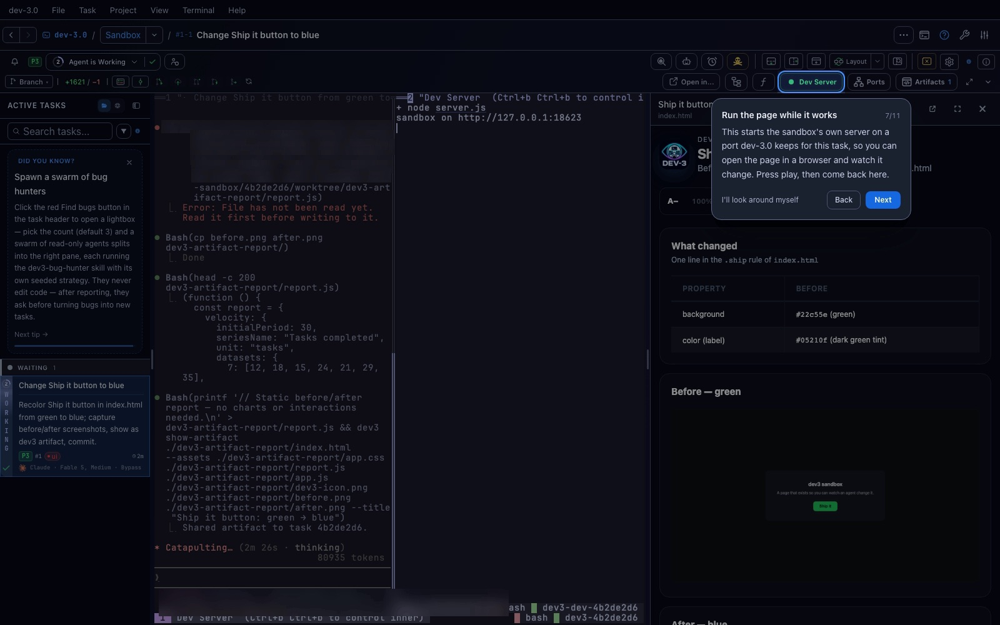
Agents can publish a page of their own — a dev3 artifact — and this one shows the button before and after, plus the exact line it changed. It stays with the task, so you can reopen it later.
This step waits as long as the work does. While the report does not exist yet the card says it is waiting on the agent, and nothing is shielded: an agent that stops to ask you something must be answerable.
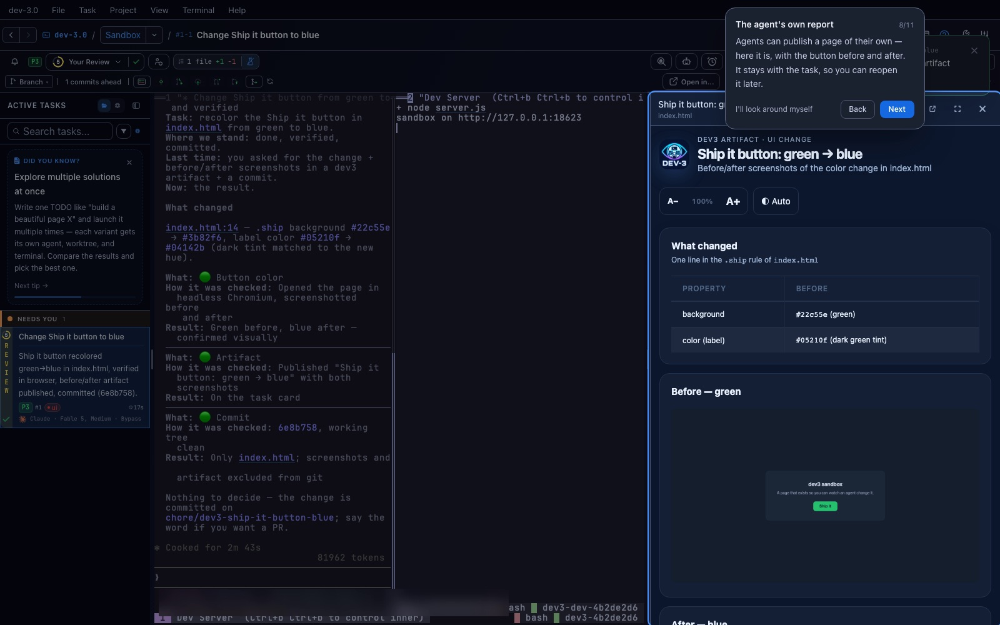
The row above the terminal is the git bar: the branch, how far ahead it is, and the diff. This is where you decide the work was worth keeping — in your own repositories that decision is the whole point.
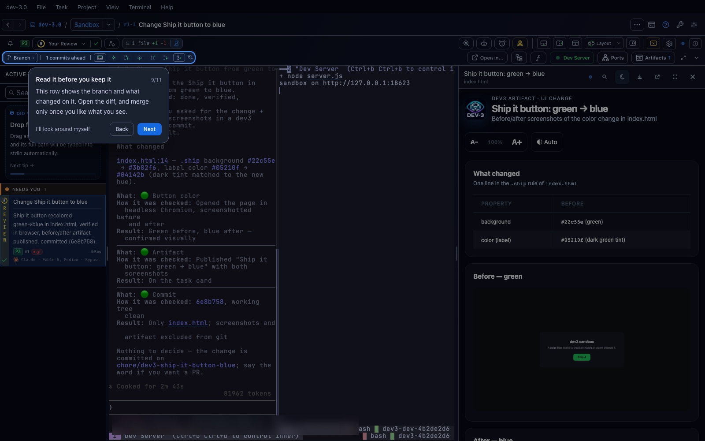
Merge puts the branch back into the base branch. It only lights up once the agent has actually committed something; before that the card flashes the ring instead of pressing a dead button, because a click that silently does nothing reads as a bug.
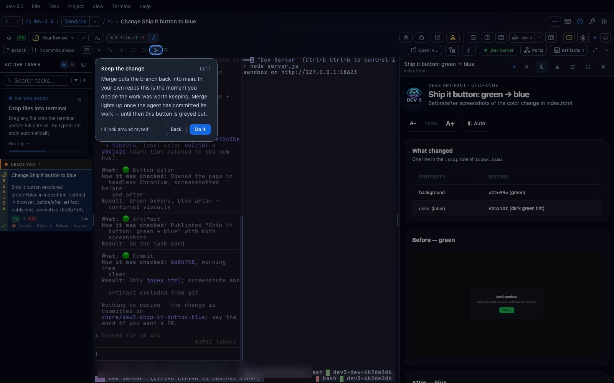
Nobody had to tell dev-3.0 the work was done: it watched the branch land and asked. Complete task moves it to Completed and cleans up the copy of the repository it worked in.
That is the whole loop — describe, launch, watch, review, merge, close.
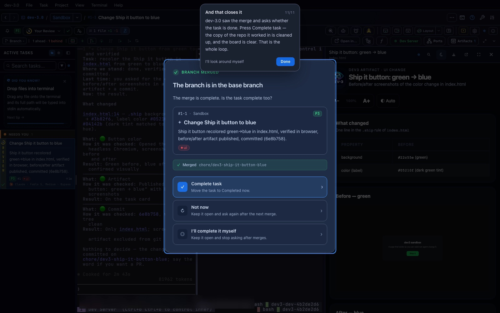
index.html — a thing you can see, not a diff you have to read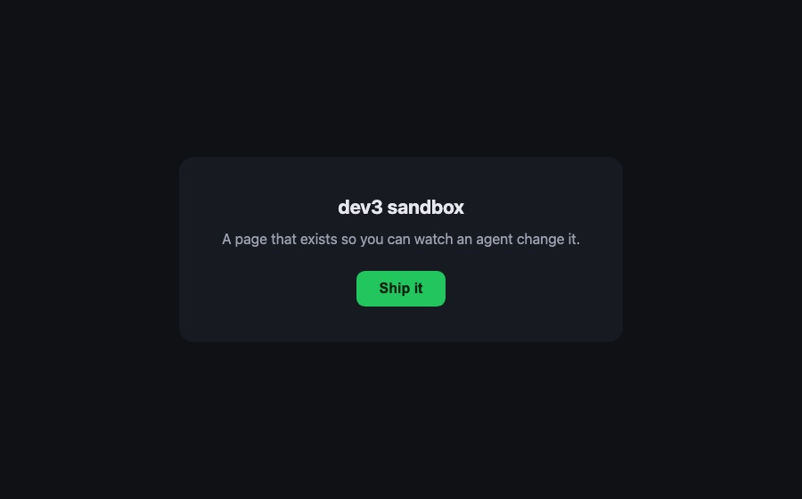
background: #22c55e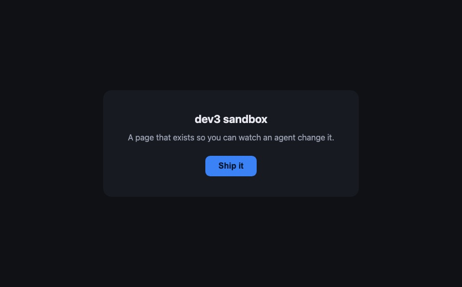
background: #3b82f6This is deliberately the smallest visible change in the repository. The point of a first task is not the code: it is watching an agent take a sentence, work in its own copy of the repo, show you the result, and hand you a branch to keep or throw away.
The task is in Completed, its working folder is gone, and the tour does not come back — walking it to the end is what records it as done. A skip does not count, so leaving early costs you nothing.
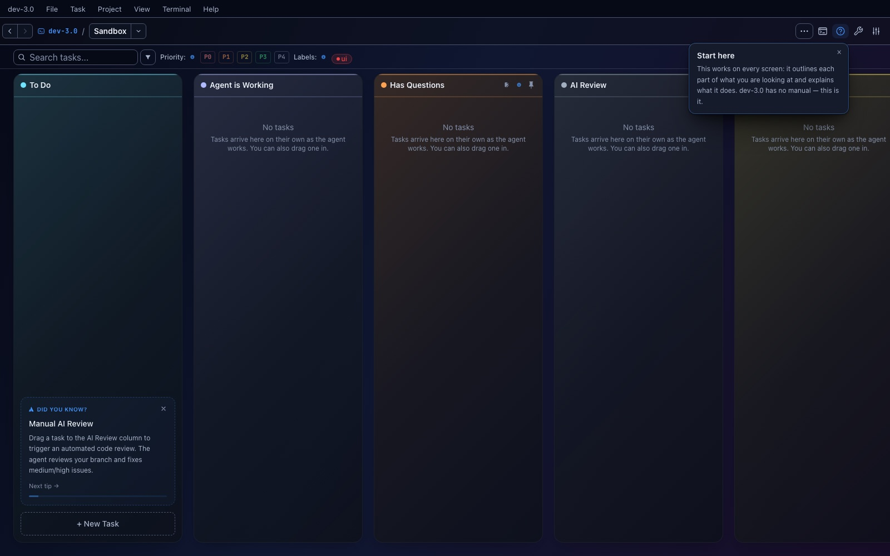
Help mode (the ? in the header) outlines every zone on the current screen and explains it when clicked. Its banner also carries Walk me through the first task, so the tour is one click away for as long as you want it.
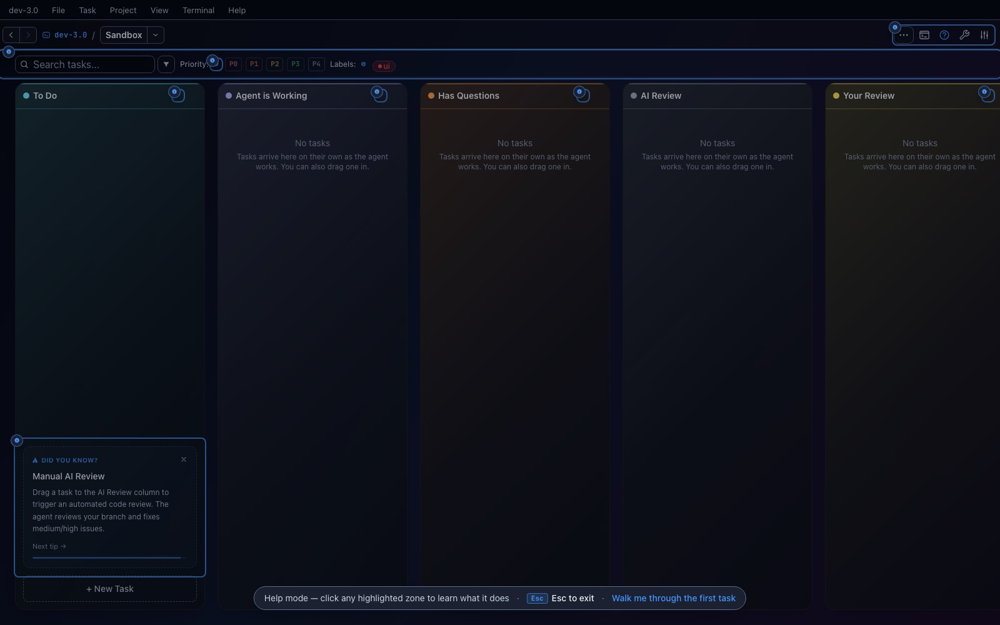
dev-3.0 is free and open source, and the sandbox above is what it offers you on
the first launch. On macOS: brew tap h0x91b/dev3 && brew install --cask dev3.
Download the latest release · What dev-3.0 is · Install guide and docs